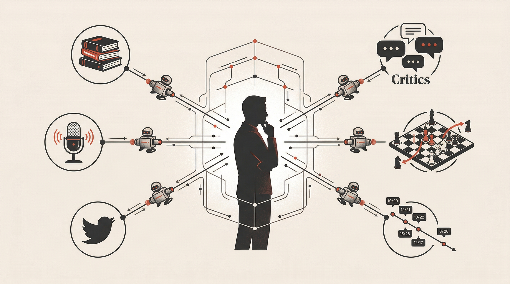

Nuwa Skill (女娲) — Chưng cất mô hình tư duy & Hội đồng Cố vấn Đa tác tử
Dự án mã nguồn mở lấy cảm hứng từ thần thoại Nữ Oa đúc đá ngũ sắc vá trời. Nuwa chưng cất phương pháp luận và nguyên lý nhận thức từ các bộ óc vĩ đại thành các góc nhìn cố vấn độc lập, cho phép 6 agent chạy song song để giải quyết những bài toán phức tạp.
1. Hội đồng Cố vấn Đa nhân cách (Advisory Board)
Thay vì dựa vào một câu trả lời đơn điệu từ một mô hình ngôn ngữ lớn (LLM), Nuwa khởi tạo một hội đồng cố vấn gồm các nhân cách có tư duy đối nghịch nhau. Mỗi cố vấn soi chiếu vấn đề của bạn dưới lăng kính đặc thù của họ:
2. Bảng phân tích 7 Lăng kính Tư duy Cốt lõi
| Nhân vật đại diện | Mô hình nhận thức (Mental Model) | Cách agent phản biện bài toán |
|---|---|---|
| Richard Feynman | Kỹ thuật Feynman & Nguyên lý tối giản | Yêu cầu bạn giải thích lại thuật toán bằng ngôn ngữ đơn giản nhất. Phát hiện ngay những khái niệm "sáo rỗng" mà bạn chưa hiểu bản chất. |
| Charlie Munger | Tư duy đảo ngược (Inversion) & Lưới đa ngành | Đặt câu hỏi: "Nếu muốn dự án này thất bại thảm hại nhất, chúng ta cần làm gì?" để chủ động tránh bẫy từ ngày đầu. |
| Naval Ravikant | Đòn bẩy không biên giới (Leverage) & Bất đối xứng | Đánh giá liệu đoạn code hoặc tính năng này có tạo ra lợi thế kép dài hạn hay chỉ là công việc lặp lại vô nghĩa. |
| Elon Musk | Nguyên lý vật lý sơ khởi (First Principles) | Bóc tách chi phí và độ phức tạp xuống tiệm cận giới hạn vật lý/nguyên tử, loại bỏ mọi tiền lệ cảm tính. |
| Steve Jobs | Giao thoa Công nghệ & Nghệ thuật Nhân văn | Phản biện khắt khe tính trực quan của UI/UX: "Khách hàng có cảm nhận được sự tỉ mỉ đến từng điểm ảnh hay không?" |
| Paul Graham | Làm việc không thể nhân rộng trước (Do things that don't scale) | Tập trung nói chuyện trực tiếp với người dùng và giải quyết nỗi đau cấp bách nhất thay vì sa đà tối ưu hóa sớm. |
| Andrej Karpathy | Kiến trúc AI Software 2.0 & Token Economics | Tối ưu ngân sách token, thiết kế context window tinh gọn và khai thác triệt để năng lực reasoning của mô hình. |
3. Cơ chế điều phối 6 Agent chạy song song
Sau khi tiếp nhận yêu cầu, Nuwa kích hoạt cơ chế thực thi phân tán (Parallel Agent Execution). 6 tác tử đồng thời nghiên cứu các nhánh bài toán và trả về báo cáo độc lập mà không bị thiên kiến của nhau ảnh hưởng:

Tách bài toán tổng thành 6 góc nhìn độc lập (kiến trúc, rủi ro, bảo mật, UX, chi phí, tốc độ).
6 agent suy luận độc lập không giao tiếp chéo nhằm giữ nguyên tính đa dạng của giải pháp.
Các agent chất vấn điểm yếu trong giải pháp của nhau theo ma trận Munger & Feynman.
Nuwa đúc kết thành 1 bản khuyến nghị duy nhất có chỉ số độ tin cậy và kế hoạch hành động cụ thể.
4. Kích hoạt Hội đồng Cố vấn Nuwa vào dự án
Hãy đóng vai Hội đồng Cố vấn Nuwa với 3 góc nhìn: Charlie Munger (tư duy đảo ngược), Richard Feynman (đơn giản hóa bản chất) và Steve Jobs (trải nghiệm người dùng).
Phản biện đề xuất kiến trúc hệ thống sau của tôi:
- Đề xuất: "Chuyển toàn bộ microservices hiện tại sang 1 Monolith phân tán chạy trên Bun và SQLite."
Chỉ ra:
1. Đâu là cách nhanh nhất khiến quyết định này sụp đổ (Munger)?
2. Tôi đang dùng thuật ngữ phức tạp nào để che giấu sự thiếu hiểu biết (Feynman)?
3. Trải nghiệm người dùng cuối có bị ảnh hưởng tiêu cực không (Jobs)?Nuwa không cố gắng trả lời nhanh nhất; mục tiêu của nó là ngăn bạn đưa ra những quyết định tồi tệ có chi phí sửa chữa hàng nghìn giờ làm việc về sau. Đây là vũ khí tư duy tối thượng cho Tech Lead và Solution Architect.